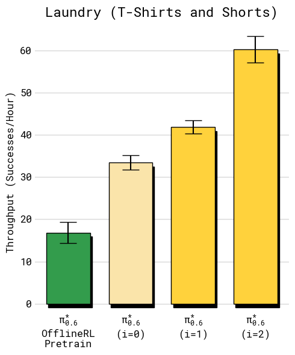
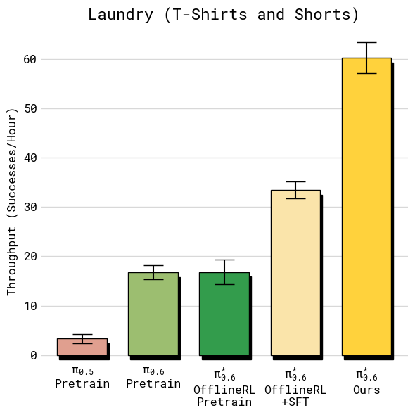
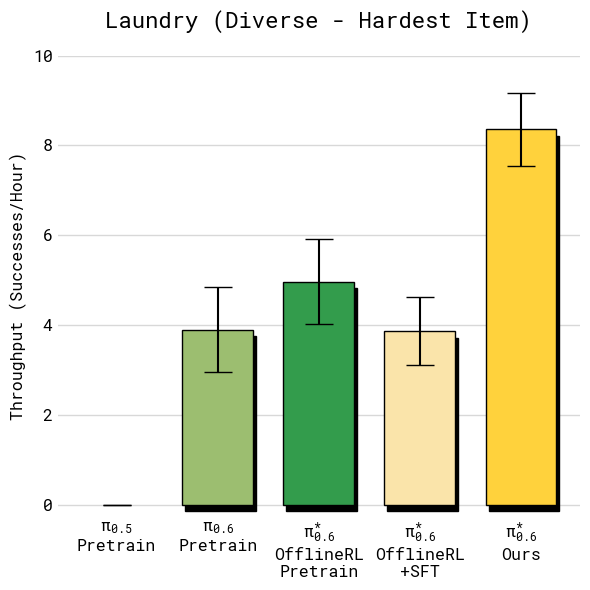
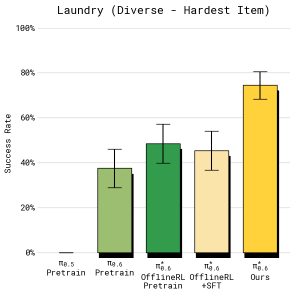
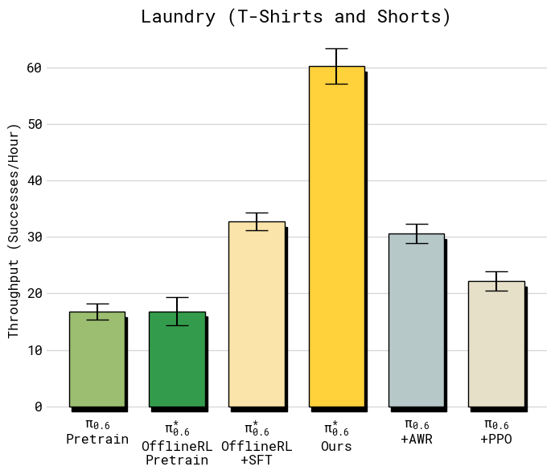

00回顾
π0.5 · 2025-04 · 上期 → π0.6 模型卡 · 2025-11 → π*0.6 · ARXIV 2511.14759
π0.5 → π0.6 → π*0.6基座换大了；π*0.6 在序列里只多插了一句话

上期 · π0.5 Fig.3 · 先离散 token 预训练，后接 flow expert；同一模型先出子任务再出动作
2025-04 · π0.5（上期）PaliGemma 3B + 300M expert · 五类数据 co-training · 进没见过的家
2025-11 · π0.6 · 只有模型卡骨干换 Gemma 3 4B · expert 增到 860M · 更多机器人平台的数据 · Knowledge Insulation 训练
2025-11 · π*0.6（本期）· RECAPπ0.6 之上只加一样：序列里插一句 “Advantage: positive / negative”，再配一个价值函数；用自己跑出来的数据训
本期目标
让机器人从自己的经验里变快、变稳：最难任务吞吐量翻倍、失败率减半
π0.5 2504.16054 · π*0.6 2511.14759 Sec.V-A · 模型未开源
01背景 · 天花板二
FIG.9 · FIG.10 · T-SHIRT TASK · 估读
天花板二：超不过示范两条破法，都要先让策略自己跑

Fig.9 · 吞吐量 · 两轮

Fig.10 · 成功率 · 两轮
T 恤任务：成功率第一轮就到 90%+，第二轮涨的几乎全是速度
SFT 的上限示范数据的水平：模仿人，最快也只能跟人一样快
RL 的上限奖励函数定义的最优：奖励说“每多花一秒扣一分”，模型自己去找比人快的做法
破法 ① · 人类干预（DAgger）策略自己跑，人在它犯错的状态下接管，补正确动作
破法 ② · 强化学习策略自己跑，只需要知道结果好坏，不需要人给正确答案
共同前提
先让策略自己跑起来 · π*0.6 两条都用
π*0.6 · Sec.VI-C · Fig.9 · Fig.10 · 素材整理 §2.3
04实验 · 任务与指标
FIG.6 · SEC.VI-A · THROUGHPUT · SUCCESS RATE
五个任务、两个指标吞吐量把速度和成功率算进同一个数

Fig.6 · 上：初始 · 下：成功 · 底：成功判据
吞吐量 throughput
每小时成功完成多少次 = 速度 × 成功率
一小时做 10 杯成 9 杯 → 9；做 4 杯成 4 杯 → 4。只看成功率会选错
成功率
人看录像、多维度打分、聚合成一个成 / 败
T 恤 / 短裤
取出 → 摊平 → 折叠 → 码放；200 s
多样衣物
11 类；只报最难的扣扣子衬衫；500 s
定向去毛病
单件橙 T 恤，领口必须朝上；200 s
双份浓缩
磨豆 → 压粉 → 锁手柄 → 萃取 → 出品；不掉不洒；200 s
装箱 · 工厂
平板 → 折箱 → 贴标 → 放进货箱；600 s
π*0.6 · Sec.VI-A · Sec.VI-C · Fig.6
04实验 · 主结果 ①
FIG.7 · THROUGHPUT · 误差棒 = 标准误 · 估读
主结果：吞吐量每小时成功次数；最右一根是 RECAP

T 恤 / 短裤

多样衣物 · 最难项

浓缩咖啡

装箱
2× 以上
多样衣物 ≈4 → ≈8.5 · 咖啡 ≈15 → ≈29 次 / 小时 · ④ → ⑤
≈33 → ≈60
T 恤 · 成功率已接近上限，吞吐量仍显著涨
≈10 → ≈13
装箱 · 大部分失败是超时
≈3 → ≈17
T 恤 · π0.5 → π0.6 基座本身的提升（① → ②）
π*0.6 · Fig.7 · Sec.VI-C · 柱状图估读
04实验 · 主结果 ②
FIG.8 · SUCCESS RATE · 人工标注 · 估读
主结果：成功率除多样衣物外全部 90%+

T 恤 / 短裤

多样衣物 · 最难项

浓缩咖啡

装箱 · 四个子阶段
90%+
T 恤 · 咖啡 · 装箱各子阶段；能拿去用的门槛
失败率 ÷ 2
多样衣物 ≈43% → ≈75% · 咖啡 ≈38% → ≈92% · ④ → ⑤
四个子阶段都最高
装箱 · 取板 / 折箱 / 贴标 / 入箱 · RECAP 最均衡
π*0.6 · Fig.8 · Sec.VI-C · 柱状图估读
04实验 · 多轮迭代
FIG.9 · FIG.10 · i = 0 → 1 → 2 · 估读
多轮迭代T 恤只用纯自主数据；装箱自主 + 干预
T 恤 · 吞吐量
T 恤 · 成功率

装箱 · 吞吐量

装箱 · 成功率 · 子阶段
+50%
T 恤 · 纯自主 · 每轮 300 条 · 4 台机器 · 2 轮 · 没有任何人类干预
第一轮成功率就 90%+
T 恤 · 第二轮几乎全是提速
2×
装箱 · 每轮 600 自主 + 360 干预 · 第一轮先降后升（论文未解释）
折箱、贴标 ≈90%
装箱 · 剩余失败主要在最后码到堆上
π*0.6 · Fig.9 · Fig.10 · Sec.VI-C · 柱状图估读
04实验 · 策略提取对比
FIG.11 · SAME DATA · T-SHIRT TASK · 估读
同样的数据，换成 AWR 或 PPO两者都难以超过 offline RL + SFT 这个起点

Fig.11 · 吞吐量

Fig.11 · 成功率
AWR · 加权回归
成功率还行（≈91%），但策略慢很多，吞吐量 ≈31 vs ≈60
PPO · DPPO / FPO 变体 + SPO 信赖域
离线设定下必须用极小信赖域 η = 0.01 才稳；稳了但学不到东西，≈22 次 / 小时
数据对 baseline 略有利
这批数据是跑 RECAP 时收的，质量比 baseline 自己能收到的更好
π*0.6 · Fig.11 · Sec.VI-C · Appendix C · 柱状图估读
04实验 · 定向去毛病
FIG.12 · STRICT CRITERION · ADVERSARIAL INITIAL CONDITION
定向去除一个失败模式换一个标注标准，行为就跟着变

Fig.12 · 成功率

Fig.12 · 吞吐量
设定
单件橙色 T 恤；严格标准：领口居中朝上；初始摆放故意让 ④ 经常折错
≈23% → 97%
2 轮 · 每轮 600 条 · 速度也快
意义
不改奖励代码、不改模型，只改标注员的勾选标准；就像只改「怎样算送达」的规则，骑手跑两批单就改过来
论文自相矛盾
正文说“完全通过 RL，无干预数据”；附录列了 280 + 378 条干预 episode。引用 97% 时别说“纯 RL”
π*0.6 · Fig.12 · Sec.VI-C · Appendix E · 柱状图估读